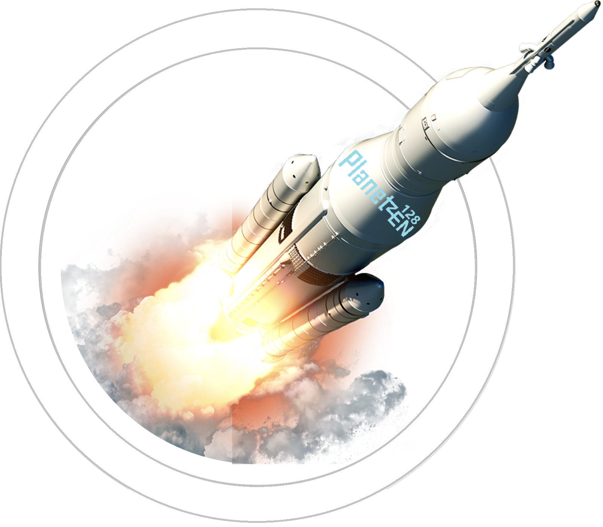

Здесь вы сможете узнать о потрясающих особенностях нашей экосистемы и разнообразии местной флоры и фауны. Исследуйте климатические условия и геологические формирования, которые делают эту планету уникальной. Мы расскажем о текущих научных проектах, направленных на изучение ее потенциала. В разделе технологий вы найдете информацию о достижениях, необходимых для колонизации и исследования. Если вас интересует культура местных цивилизаций, вы сможете узнать о их языках и традициях. Также мы предлагаем информацию о возможностях космического туризма для тех, кто хочет посетить эту удивительную планету. Присоединяйтесь к нам и станьте частью захватывающего приключения!
Сайт Planet-128-ZEN может работать следующим образом:
Вот краткий обзор пяти миссий на сайте Planet-128-ZEN в вашей галактической кампании:
Цель: Изучить климат и биосферу Planet-128-ZEN.
Задачи:
- Собрать образцы почвы и воды.
- Зафиксировать климатические условия в разных регионах.
- Найти и каталогизировать местные виды флоры и фауны.
Цель: Установить контакт с разумными существами (если они существуют).
Задачи:
- Отправить разведывательную группу для поиска следов жизни.
- Разработать методы общения.
- Провести переговоры для мирного сосуществования.
Цель: Обменяться технологическими и культурными знаниями с местными жителями.
Задачи:
- Разработать программы обмена.
- Провести семинары и лекции.
- Собрать информацию о культуре и технологиях местных жителей.
Цель: Построить временную базу для дальнейших исследований.
Задачи:
- Найти подходящее место для базы.
- Собрать ресурсы для строительства.
- Настроить связь с главной базой в вашей галактике.
Цель: Обеспечить безопасность базы от возможных угроз.
Задачи:
- Построить оборонительные сооружения.
- Организовать патрулирование территории.
- Провести учения для команды на случай нападения.
Каждая миссия может развиваться в зависимости от ваших решений и действий. Удачи в исследовании Planet-128-ZEN!